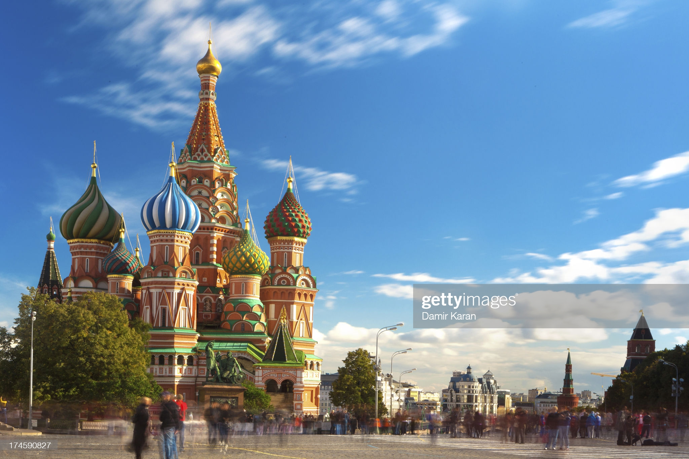
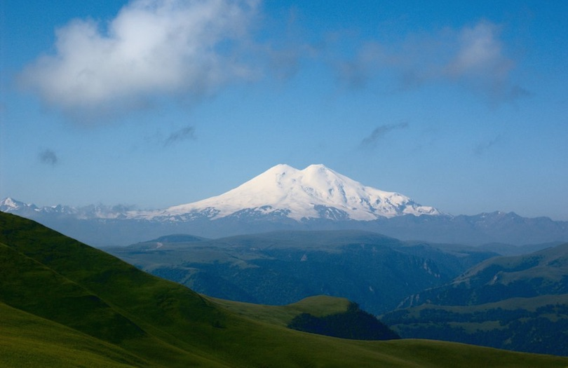
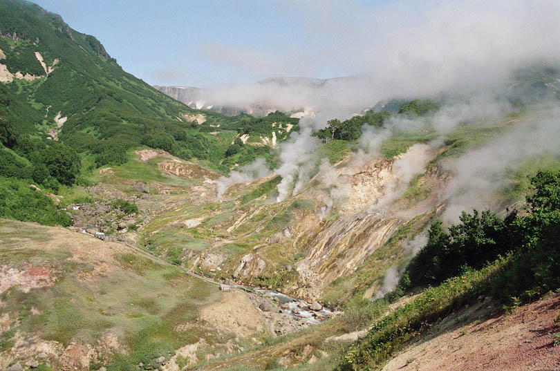
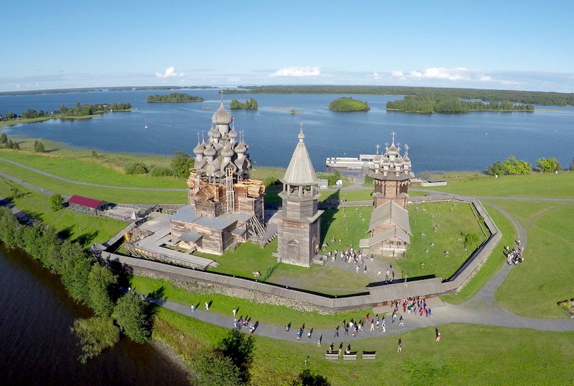

In this page, you will get to know why I love Saint Basil's Cathedral located in Moscow, Russia.
The Cathedral of Vasily the Blessed (Russian: собо́р Васи́лия Блаже́нного, Sobor Vasiliya Blazhennogo), commonly known as Saint Basil's Cathedral, is an Orthodox church in Red Square of Moscow, and is one of the most popular cultural symbols of Russia. The building, now a museum, is officially known as the Cathedral of the Intercession of the Most Holy Theotokos on the Moat, or Pokrovsky Cathedral. It was built from 1555 to 1561 on orders from Ivan the Terrible and commemorates the capture of Kazan and Astrakhan. It was the city's tallest building until the completion of the Ivan the Great Bell Tower in 1600.
The original building, known as Trinity Church and later Trinity Cathedral, contained eight chapels arranged around a ninth, central chapel dedicated to the Intercession; a tenth chapel was erected in 1588 over the grave of the venerated local saint Vasily (Basil). In the 16th and 17th centuries, the church, perceived (as with all churches in Byzantine Christianity) as the earthly symbol of the Heavenly City, was popularly known as the "Jerusalem" and served as an allegory of the Jerusalem Temple in the annual Palm Sunday parade attended by the Patriarch of Moscow and the Tsar.
The cathedral has nine domes (each one corresponding to a different church) and is shaped like the flame of a bonfire rising into the sky, a design that has no parallel in Russian architecture. Dmitry Shvidkovsky, in his book Russian Architecture and the West, states that "it is like no other Russian building. Nothing similar can be found in the entire millennium of Byzantine tradition from the fifth to the fifteenth century ... a strangeness that astonishes by its unexpectedness, complexity and dazzling interleaving of the manifold details of its design." The cathedral foreshadowed the climax of Russian national architecture in the 17th century.
“Saint Basil's Cathedral”
"Mount Elbrus"
Mount Elbrus is located in the Caucasus Mountain Range in Southern Russia. At 5,642 meters (18,510 ft), Elbrus is included as one of the Seven Summits, the highest summits on each of the planet’s seven continents, attracting both experienced and novice mountain climbers. While the mountain was formed from a volcano, it is considered dormant, with no recorded eruptions. A cable car system can take visitors as high as 3,800 meters (12,500 ft), facilitating ascents to the summit.
"Valley of Geysers"
Situated on the Kamchatka Peninsula in the Russian Far East, the Valley of Geysers is the second largest geyser field in the world. The Valley of Geysers was discovered in 1941 by local scientist Tatyana Ustinova. Since then it became a popular tourist attraction in Kamchatka and attracts a lot of interest from scientists and tourists.
"Kizhi Island"
Located in Karelia, a region in Northwestern Russia that borders Finland and the White Sea, Kizhi Island is best known for its incredible open-air museum. Karelians have lived in the region since the 13th century, torn between the cultures of the East and the West. The museum’s collection features the 120-foot high Church of the Transfiguration of Our Savior, a structure made famous by its 22 domes. Other tourist attractions includes dozens of wooden houses, windmills, chapels and barns. The peasant culture is represented with craft demonstrations and folk ensembles.